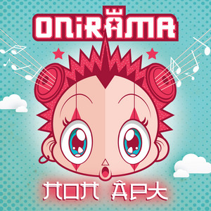
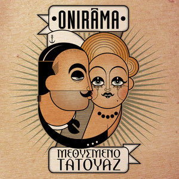
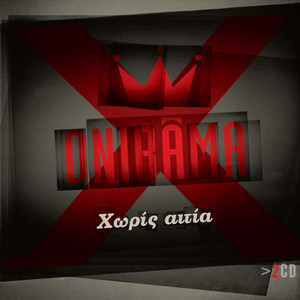
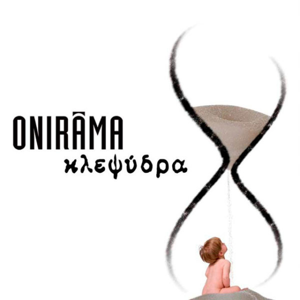
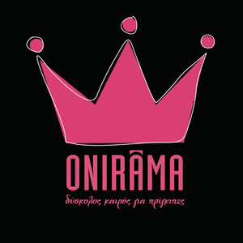

About Us
Το συγκρότημα σχηματίστηκε τον Οκτώβριο του 2000 ως αποτέλεσμα μιας ιδέας του Θοδωρή Μαραντίνη και του Διονύση Φραντζή όταν συναντήθηκαν στη διάρκεια της στρατιωτικής τους θητείας. Ιδρυτικά μέλη ήταν επίσης οι Γιώργος και Δημήτρης Κοκονίδης, ενώ λίγους μήνες αργότερα έγινε μέλος ο Κώστας Καρακατσάνης. Το συγκρότημα ξεκίνησε αρχικά σαν χόμπι, με το όνομα "Mixing Up The Medicine" , όνομα που αντικατόπτριζε τα πολλά και διαφορετικά είδη μουσικής που έπαιζαν. Το 2003 έγινε μέλος ο Χρήστος Τρεσίντσης και στα μέσα της ίδιας χρονιάς έγινε η μετονομασία του συγκροτήματος σε Onirama, όνομα που προέρχεται από τη φράση "Τα Όνειρά μας". Στα τέλη του 2005 κυκλοφόρησε το πρώτο τους άλμπουμ, με το τραγούδι "Ο Χορός" (Κλείσε τα Μάτια) να γίνεται επιτυχία, όπως και το σινγκλ "Μια μέρα θα' ρθεις". Το Μάρτιο του 2006 οι Onirama ήταν υποψήφιοι στην κατηγορία του καλύτερου ποπ συγκροτήματος στα 5α Βραβεία Αρίω. To καλοκαίρι του 2007 περιοδεύουν με τον Αντώνη Ρέμο. Τον Ιούνιο του 2008 κυκλοφόρησαν το δεύτερό τους άλμπουμ, με τίτλο "Κλεψύδρα" το οποίο ήταν στην πρώτη θέση στους καταλόγους επιτυχιών της IFPI και έπειτα έγινε χρυσό. Το ίδιο άλμπουμ ήταν στην 11η θέση στον κατάλογο με τα 50 καλύτερα ελληνικά άλμπουμ του έτους 2008 και στην 13η θέση στον κατάλογο ελληνικών και ξένων άλμπουμ του 2008. Τη σεζόν 2009-2010 εμφανίζονται με τον Μιχάλη Χατζηγιάννη στο Rex. Το Νοέμβριο του 2010 κυκλοφόρησε ο δίσκος Στη Χώρα των Τρελών ηχογραφημένος στα Black Studios στη Σαντορίνη. Περιελάμβανε το επίσημο τραγούδι των Special Olympics Athens 2011 Εκεί για σένα εγώ. Τον Οκτώβριο του 2011 ξεκίνησαν ζωντανές εμφανίσεις με τον Σάκη Ρουβά και την Ελένη Φουρέιρα στο Αθηνών Αρένα. Παράλληλα, εμφανίζονται σε νυχτερινά κέντρα διασκέδασης σε όλη την Ελλάδα.
Albums
 Ανθολόγιο για μικρούς και μεγάλους 2021 30 τραγούδια |
 Pop Art 2017 15 τραγούδια |
|  Μεθυσμένο τατουάζ 2014 12 τραγούδια |
 Χωρίς αιτία 2009 22 τραγούδια |
|  Κλεψύδρα 2008 14 τραγούδια |
 Δύσκολος καιρός για πρίγκιπες 2005 14 τραγούδια |